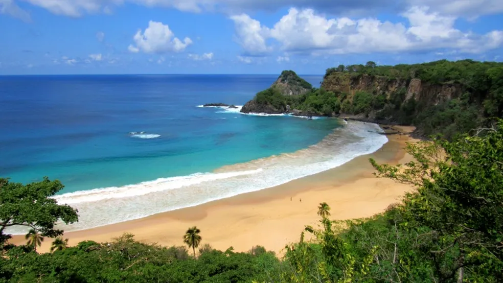

Maravilhas do Brasil
Conheça a nossa empresa!
A empresa Maravilhas do Brasil é uma agência de turismo e hospedagem pelas maravilhas do nosso país e com foco em proporcionar experências inesqueciveis aos seus clientes. Oferecendo serviços de viagens personalizadas, roteiros exclusivos, pacotes turísticos e hospedagem em destinos deslumbrantes, a empresa se destaca pela excelência no atendimento e pela qualidade de seus serviços.

Lugares
Eleita muitas vezes como uma das melhores praias do mundo (Maravilhas do Brasil),oferece uma das mais belas vistas da ilha com seu mar azul turquesa. Baía do Sancho é descrita como uma “bela praia remota” que só pode ser acessada descendo escadas e degraus de pedra e que possui “majestosas falésia de tirar o fôlego”
Hospedagens
Localizada no coração da praia, o hotel HAB é um destino de luxo para viajantes exigentes. Seus quartos espaçosos e vistas deslumbrantes com restaurantes premiados e uma equipe atenciosa,o hotel HAB é o local perfeito para ficar hospedado durante suas férias.

.png)
Hellen Martins
.png)
Ana Saraiva

Bianka Fraga